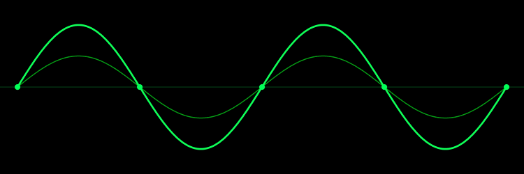
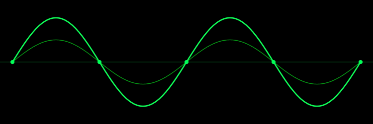

Gained in-depth experience with Microsoft Azure by creating a
multitude of cloud tutorials over the past year
of employment.
Underwent 3 months of cloud training at the start of
employment, where I learnt the fundamentals
of the major cloud
platforms; Azure, AWS and GCP. Then branched out and took
deeper studies into Azure.
Successfully attained multiple Azure
cloud certifications, such as:
• AZ-900: Microsoft Azure Fundamentals.
• AI-900: Azure AI Fundamentals.
• DP-900: Azure Data Fundamentals.
Achieved the highest grades in the company with my DP-900
grade being 925/1000. This gives me a solid understanding
of both Azure and AI/ML and data science. After completion
of training, created and maintained a multitude of beginner
to advanced level courses for cloud professionals. Expertly
fulfilled my main responsibility of creating Microsoft Azure
cloud tutorials, by producing the highest quantity and quality of
tutorials on my team, with a personal decision to focus
on AI/ML
and data science based tutorials. Additionally created a range
of GCP tutorials. Created over 80 highly
professional tutorials
and responsibly managed over 300. Copiously populated the
companies platform with a diverse
range of high-quality
tutorials.
Separate focus was also placed on non-cloud based tutorials.
Independently taught
myself the basics of programming
languages such as R, Go, JavaScript, HTML and CSS as well
as useful supplementary
Python libraries such as TensorFlow
and Pandas . Created full length courses aimed at providing the
customer with a solid
understanding of a larger topic than the
stand-alone tutorials. Produced exemplary full-length courses on R, Go and
Pandas.


 

Skilled mathematician placing in the top 10 students on the masters
programme during the
first semester of year 3. Subsequently being nominated to apply for
a summer school
at the London Mathematics Society.
Bachelors Dissertation: Computational Applied Mathematics.
• Successfully analysed the efficacy of computational
methods for a multitude of applied problems.
This is
a highly transferable skill that can be applied to many
professional practices.
Master's Dissertation: Periodic solutions of the N-body
problem.
• Independently developed a computational technique for
measuring a quantity of vital importance
to my topic that
I then optimized twice. Improving it's performance by a
factor of 1000-10000%
depending on the circumstances.
• Numerically simulated solar system dynamics for
long-term
stability forecasting and extrapolation.
Displaying considerable ability in dealing with exceedingly
complicated topics with a rigorous and scientific attention
to detail.
Modules Included:
General Relativity. Entropy. Linear and
Non-linear Waves. Advanced Mathematical Methods.
Statistics.
Logic. Financial Mathematics 1 - 3. Analysis.
Topology and
Geometry. Computational Mathematics.